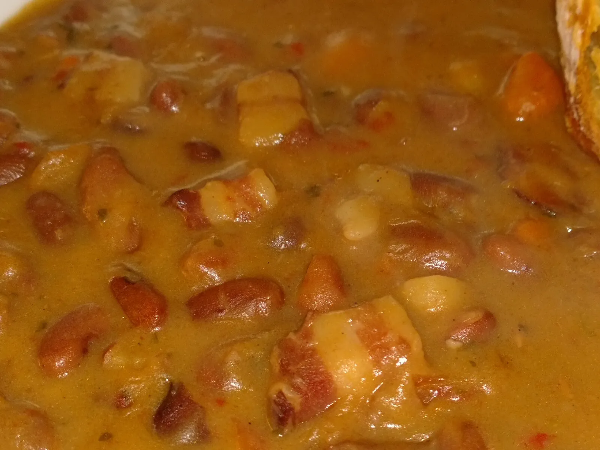

GRAH SA ŠPEKOM I KOBASICAMA

Sastojci
- 500g graha
- 300g luka
- 4 češnja češnjaka
- 4 mrkve
- 1 peršin
- 1 pasternjak
- špek
- suha kobasica
- sol
- papar
- vegeta
- 1 žlica pinđura
- 1 žlica ajvara
- crvena paprika
- brašno
- sjeckani listići peršina
- ulje
- voda
Priprema
- grah prokuhati u vodi, i procijediti.
staviti ga ponovo kuhati u frišku vodu i kuhati do kraja.
luk sitno nasjeckati, staviti dinstati, malo posoliti da luk omekša, dodati nasjeckani češnjak
špek i kobasice narezati na manje komadiće i dodati u dinstani luk i češnjak.
lagano dalje dinstati i doljevati vodu iz graha. na to dodati nasjeckano povrće i začine
- kuhati, te dok je sve skoro gotovo dodati grah sa vodom. napraviti laganu zapršku (ulje,brašno,paprika), dodati u grah i prokuhati.
nakraju dodati nasjeckani peršin i varivo je gotovo